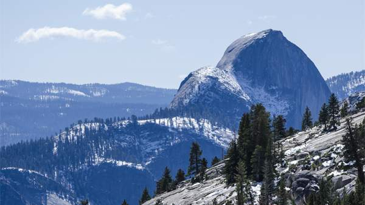

Half Dome
Half Dome is the iconic symbol of Yosemite. It rises more than 4,737 feet (1,444 m) above the floor of Yosemite Valley, and looks like a perfect dome that has lost one side. Although visible from most places in the park, one of the best views is from Glacier Point on the south side of the valley.
For many years, Half Dome’s smooth granite surface appeared totally inaccessible to climbers, but it was finally conquered in 1875 by drilling and placing iron eyebolts into the rock. Nowadays thousands of hikers reach the top each year with the aid of steel cables that act as handholds. The route has become so popular that it’s now necessary to obtain a climbing permit in advance.
For the less energetic, viewing Half Dome from the valley floor and other vantage points in the park remains an unforgettable sight.